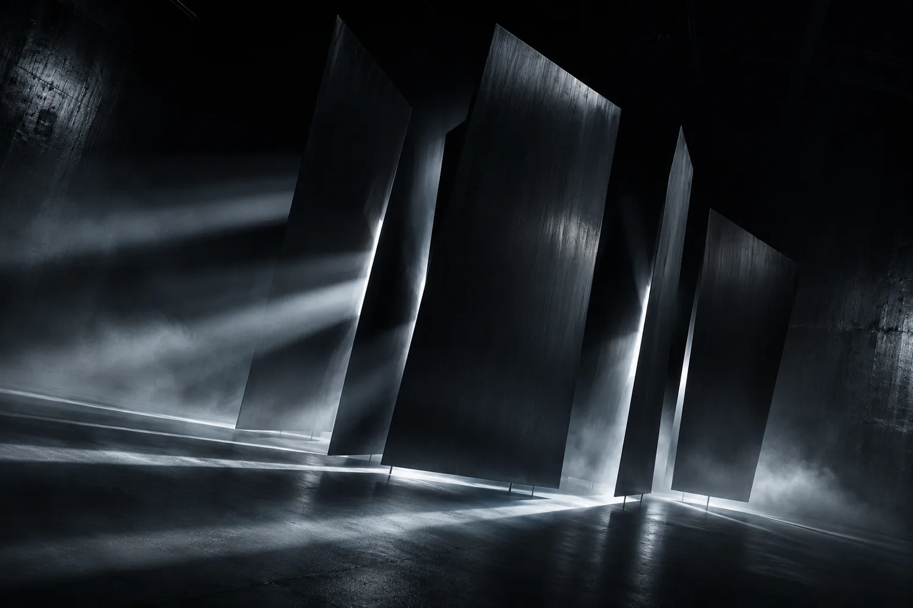

01 / 02
Порог
Подвешиваем световое кольцо над отражающим полом. Пройдите вдоль стены и посмотрите, как отражение меняется с углом.
Световая выставка
Мы собираем свет в кольцо, а затем разбиваем его на лучи. Посмотрите, как он меняет два тёмных зала.
Смотреть экспозициюЭкспозиция
Сначала замкнутый контур, затем свет между стальными плитами. Переходите между залами и рассматривайте детали.
01 / 02
Подвешиваем световое кольцо над отражающим полом. Пройдите вдоль стены и посмотрите, как отражение меняется с углом.

02 / 02
Размещаем стальные плиты так, чтобы свет проходил между кромками. Остановитесь сбоку: оттуда хорошо видны границы лучей.
Посещение
В первом зале дайте глазам привыкнуть к темноте. На оба зала стоит заложить около получаса. Можно задержаться у любой инсталляции и вернуться к первому кадру.
Вернуться к залам